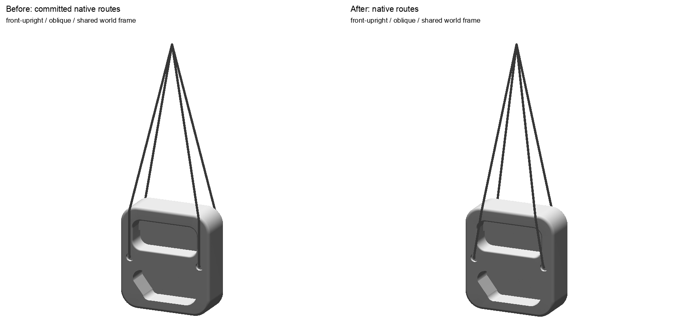
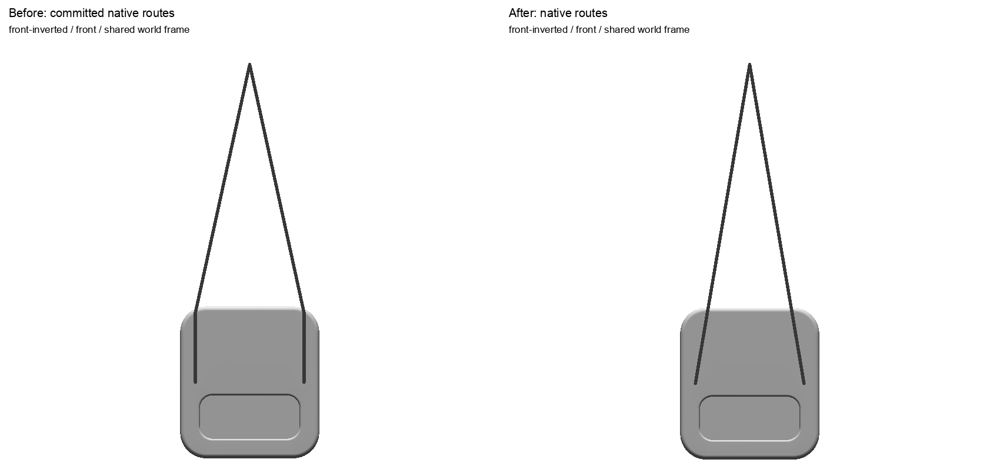

Actual unchanged USDZ; all four exact saved routes. Same world frame. Capsule previews are technical illustrations, not app captures. Native physical certificates retained separately.
front-upright / frontfront-upright / sidefront-upright / top

front-upright / oblique

front-inverted / frontfront-inverted / sidefront-inverted / top